Transporte Quântico em Redes Hexagonais
Dr. Mircea Daniel Galiceanu
Introdução

Introdução
Modelo de Caminhadas
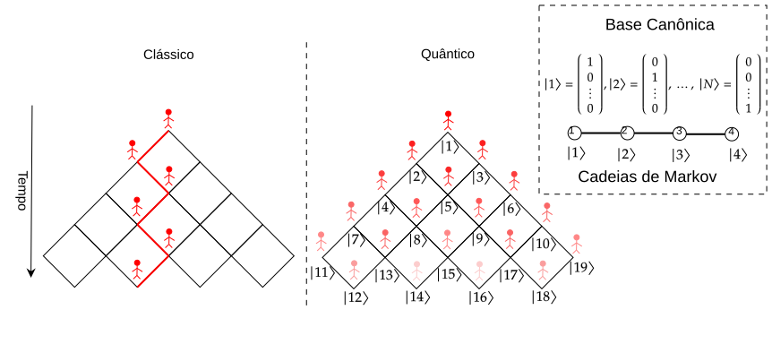
Caminhadas Quânticas
Introdução
Objetivo
- Avaliar a eficiência do transporte quântico nas redes de grafeno e fulereno.
- Determinar as probabilidades médias de retorno clássico e quântico.
- Deterninar a probabiladade de transição quântica e o valor médio ao longo do tempo.
- Identificar as estruturas que possuem o melhor e pior eficiência do transporte.
Metodologia
Grafos e Matriz Laplaciana
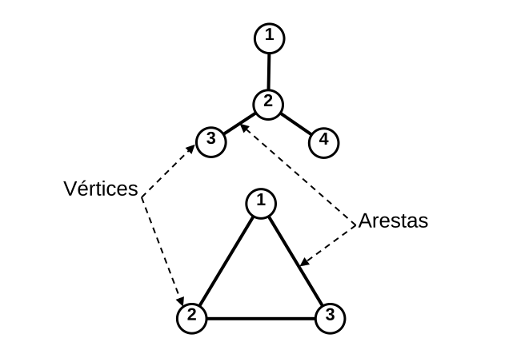
- Elementos da Matriz Laplaciana \(\mathbf{L}\)
\[\small L_{ij} =\begin{cases} \;\;k_i, & i=j, \\ -1,&\text{se } i \neq j \text{ e ocorrer ligação entre os vértices } i \text{ e } j ,\\ \;\;\;0,& \text{caso contrário}.\end{cases}\]
Obs.: também pode ser chamada de Matriz Conectividade \(\mathbf{A}\).
- Grafo Estrela
\[\mathbf{L}=\begin{pmatrix}1&-1&0&0\\ -1&3&-1&-1\\ 0&-1&1&0\\ 0&-1&0&1\\\end{pmatrix}\]
Espectro de autovalores
\[L_{ij}\mathbf{w}_i=\lambda_i\mathbf{w}_i\]
\(\lambda_i \in \mathbb{R}\) e segue a ordem \(0=\lambda_1\leq\lambda_2\leq \dots\leq \lambda_{N}\)
\(\mathbf{w}_i\) é ortonormal
Metodologia
Diagramas de Schlegel
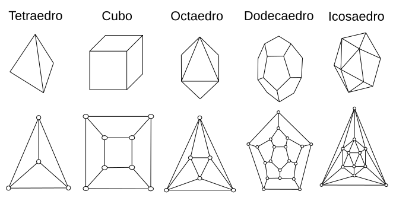
- Fórmula de Euler para poliedros \[V-E+F=2\]
- Fulereno \(C_n\) \[P=12, \quad H=\dfrac{n}{2}-10\]
- \(C_{60}\): 12 pentágonos e 20 hexágonos; \(C_{70}\): 12 pentágonos e 25 hexágonos.
Metodologia
Fulerenos
Metodologia
Folhas de grafeno
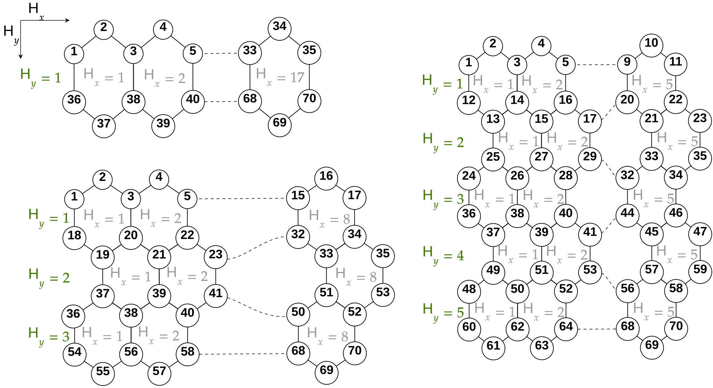
- Primeira e última linha
\[2H_x+1\]
- Linhas interiores \((H_y>1)\)
\[2H_x+2\]
- Total de vértices e arestas
\[N_G=2(H_x+H_y+H_xH_y)\] \[E_G=N_G+H_xH_y-1\]
Metodologia
Medidas de Probabilidade
- Probabilidade Média de Retorno
Clássico \[\bar{p}(t)= \dfrac{1}{N}\sum_{n=1}^Ne^{- \lambda_n t}\]
Quântico \[\; \bar{\pi}(t)=\frac{1}{N}\left|\sum_{n=1}^Ne^{-i\lambda_n t}\langle j|w_n\rangle\langle w_n|j\rangle\right|^2\]
- Probabilidade de Transição Quântica
\[\pi_{k,j}(t)=\left|\sum_{n=1}^Ne^{-i\lambda_n t}\langle k|w_n\rangle\langle w_n|j\rangle\right|^2\]
- No limite ao longo do tempo
\[\lim_{t\rightarrow \infty}\bar{p}(t)=\dfrac{1}{N}\]
- Valor Médio ao longo do tempo
\[\scriptsize\chi\equiv\dfrac{1}{N^2}\sum_{n=1}^N\sum_{m=1}^N\delta_{\lambda_n,\lambda_m}\leq\dfrac{1}{N}\sum_{j=1}^N\left[\sum_{n=1}^N\sum_{m=1}^N\delta_{\lambda_n,\lambda_m}|\langle w_n|j\rangle|^2|\langle w_m|j\rangle|^2\right]\equiv\bar{\chi}\]
\[\begin{aligned}\blacktriangleright\;\chi,\bar{\chi }=0\rightarrow\text{ O tranporte é eficiente} \;\;\\ \blacktriangleright\;\chi,\bar{\chi }=1\rightarrow\text{O tranporte é ineficiente}\end{aligned}\]
Resultados
Probabilidade Média de Retorno e Eficiência
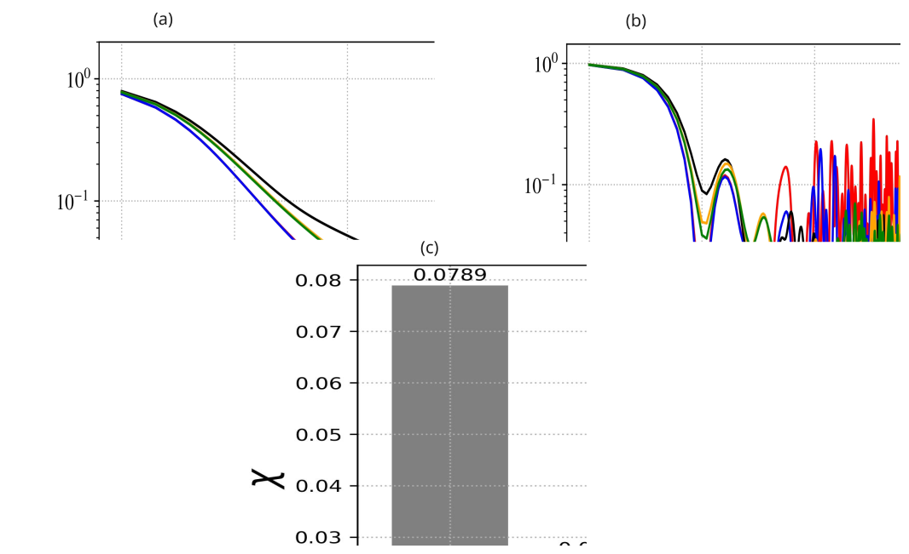
Resultados
Variando \(H_x\) e \(H_y\)
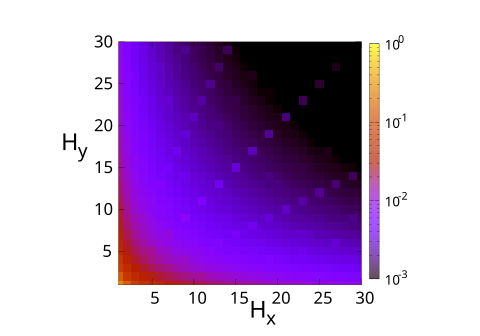
- Eficientes
- (1,\(H_y\)) predominantemente Armchair.
- (\(H_x\),i) para \(i>1\) fixo.
Ineficiente
- \(H_x=H_y\) para valores ímpares \(H_x(H_x>7)\).
- (\(H_x,H_y=2H_x+1\)).
- (\(H_x=2H_x+1,H_y\)).
Resultados
Probabilidade de Transição Quântica
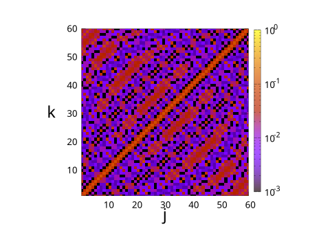
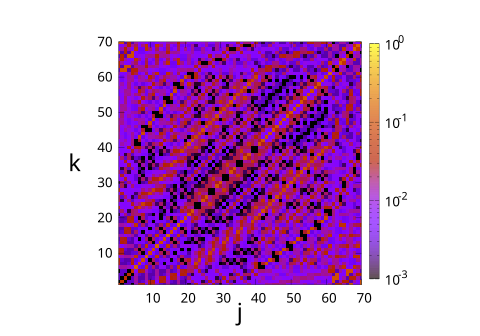
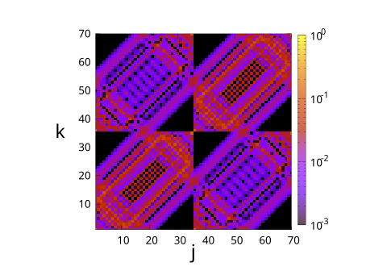
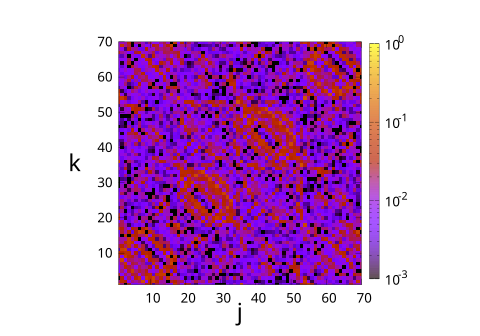
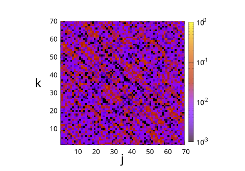
- Fulereno \(C_{60}\)
- Probabilidade alta em nós diametralmente opostos 2 e 55: \(2\rightarrow 1 \rightarrow 6 \rightarrow 7\rightarrow 21 \rightarrow 22 \rightarrow 39 \rightarrow 40 \rightarrow 54\rightarrow 55\)
- Fulereno \(C_{70}\)
- Probabilidade alta em \(2\rightarrow 12\rightarrow 13\rightarrow 30\rightarrow 31\rightarrow 50\rightarrow 51\rightarrow 65\rightarrow 66\)
- Centros de difusão quântica em nós: 23,24,27,28,31,32,35,36,39,40


Conclusões
A eficiência do transporte quântico está ligada à simetria da rede.
Fulereno
- \(C_{70}\) é eficiente e tem menor degenerecência.
- \(C_{70}\) é ineficiente e tem maior degenerecência.
Grafeno
- Estruturas mais linerares com \(H_x>>H_y\) o caminhante se propaga mais rapidamente.
- Estruturas quadradas (\(H_x=H_y\)) transporte é inificiente
- Número de faces ímpar em uma direção (\(H_x\) ou \(H_y\)) ou em duas \(H_x=H_y(H_x>7)\) piora o transporte.